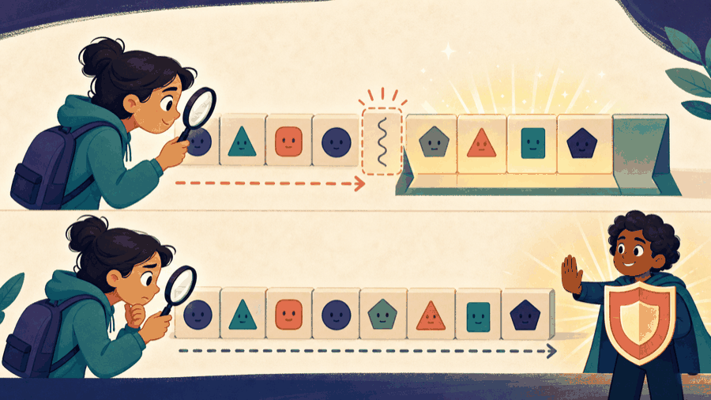

# Lecture 11: Process owned text with explicit boundaries ## Prefer owned text values, then study their representation **Instructor:** [Dr. Debasish Pattanayak](https://drdebmath.github.io)
## std::string owns and sizes text safely. · Validate an institute enrollment ID A useful text rule combines string length, fixed prefixes, and character classification. ~~~cpp #include <cctype> #include <iostream> #include <string> bool validId(const std::string& id) { if (id.size() != 9 || id.substr(0, 2) != "BT") return false; for (std::size_t i = 2; i < id.size(); ++i) if (!std::isdigit(static_cast<unsigned char>(id[i]))) return false; return true; } int main() { std::cout << std::boolalpha << validId("BT2601034"); } ~~~ **Takeaways** - std::string owns and sizes text safely. - Validation is a sequence of explicit predicates. - cctype functions require careful character conversion.
## The general form of std::string construction, measurement, and input ~~~cpp std::string <name>; // empty, size 0 std::string <name> = "<text>"; std::string <name>(<count>, '<ch>'); // <count> copies of one character <name>.size() // number of characters <name>.empty() // true exactly when size() == 0 <name>[<i>] // 0 <= <i> < size(), unchecked <name>.at(<i>) // checked: throws std::out_of_range <name>.substr(<pos>, <length>) // <pos> must satisfy <pos> <= size() <name>.find("<needle>") // returns std::string::npos when not found std::cin >> <name>; // one whitespace-delimited word std::getline(std::cin, <name>); // the rest of the line, spaces included ~~~ | Part | Meaning | | --- | --- | | `<i>` | Zero-based, so the last character is at <code>size() - 1</code>. | | `substr(<pos>, <length>)` | Takes a position and a <em>length</em>, not two positions. A short tail is truncated, not an error. | | <code>find</code> | Compare the result against <code>std::string::npos</code>. It is not <code>-1</code>, and it is unsigned. | | <code>>></code> vs <code>getline</code> | <code>>></code> stops at the first space and leaves the newline behind; <code>getline</code> consumes the whole line. | A <code>std::string</code> owns and sizes its own characters, so length is a question you ask the object rather than compute.
## std::string owns, sizes, and edits its character sequence ~~~cpp #include <string> std::string name = "IIT Indore"; std::cout << name.size() << '\n'; ~~~ <code>std::string</code> manages its character storage.
## getline reads a complete line, including spaces ~~~cpp std::string sentence; std::getline(std::cin, sentence); ~~~ <code>getline</code> preserves spaces. When mixing formatted extraction and line input, consume the pending newline deliberately.
## The text wants a home, not a loose pile of letters <figure class="course-meme-figure"> <figcaption> <p class="course-meme-setup"><strong>Setup</strong> The text wants a home, not a loose pile of characters.</p> <p class="course-meme-punchline"><strong>Punchline</strong> One owned container tracks the storage and the size for you.</p> </figcaption> </figure>
## Positions and lengths make text operations explicit ~~~cpp std::size_t dash = code.find('-'); if (dash != std::string::npos) { std::string prefix = code.substr(0, dash); } ~~~ Always check whether a search succeeded.
## Character classification requires a safe unsigned-char conversion ~~~cpp unsigned char ch = static_cast<unsigned char>(text[i]); if (std::isdigit(ch)) ++digits; ~~~ Character classification comes from `<cctype>`. Convert through <code>unsigned char</code> before calling it.
## Formatted input quits at the first space <figure class="course-meme-figure"> <figcaption> <p class="course-meme-setup"><strong>Setup</strong> Formatted input sees a space and thinks the line is finished.</p> <p class="course-meme-punchline"><strong>Punchline</strong> The wide reader keeps the whole sentence, quiet spaces included.</p> </figcaption> </figure>
## Game evolution: A replay string stores commands | Today's concept | Exact game part enabled | |---|---| | strings and character validation | store a whole move sequence and reject unknown commands | ~~~cpp #include <cctype> #include <string> int main() { std::string replay="wAsD"; bool valid=true; for (std::size_t i=0; valid && i<replay.size(); ++i) { unsigned char ch=static_cast<unsigned char>(replay[i]); char move=static_cast<char>(std::tolower(ch)); valid = move=='w' || move=='a' || move=='s' || move=='d'; } } ~~~ **Boundary tests:** check the empty replay, one valid character, and one invalid character. **Next unlock · L12:** turn a replay into a repeatable regression test.
## Separate predicates make text validation reliable ~~~cpp bool valid = id.size() == 9; valid = valid && id[0] == 'B' && id[1] == 'T'; for (std::size_t i = 2; valid && i < id.size(); ++i) { valid = std::isdigit(static_cast<unsigned char>(id[i])); } ~~~
## C-style strings end at a null character and need manual bounds care A C-style string is a character array ending at the first null character <code>'\0'</code>. Functions from `<cstring>` cannot discover the capacity of a destination buffer. Prefer <code>std::string</code>; use C strings only when an interface requires them.
## The delimiter may be there — or taking the day off <figure class="course-meme-figure"> <p></p> <figcaption> <p class="course-meme-setup"><strong>Setup</strong> The delimiter may be there. It may also be taking the day off.</p> <p class="course-meme-punchline"><strong>Punchline</strong> Check the search result before slicing anything.</p> </figcaption> </figure>
## Safe text processing prefers ownership, parsing rules, and bounds - <code>std::string</code> is the default owned text type. - Check search results and index bounds. - Use <code>getline</code> for complete lines. - Character classification requires a safe unsigned value. - A buffer overflow is undefined behavior, not a recoverable string operation.
## Verify Validate an institute enrollment ID with a claim, trace, boundary, and improvement Use the practical example as a small experiment. Before you leave, make the reasoning visible: - **Claim:** std::string owns and sizes text safely. - **Trace:** name the state that changes and the observation that would confirm it. - **Boundary:** choose one smallest, largest, empty, or invalid input that could expose a defect. - **Improvement:** explain one change that would make the solution clearer or safer. ### Exit ticket Choose one problem to solve now and two to attempt in the lab: - Normalize a full name to title case while preserving spaces. - Count words without using stringstream. - Find every occurrence of a substring, including overlaps.
## Explain Validate an institute enrollment ID without opening the code Explain today’s idea to a partner without opening the code: 1. State the input, output, and one rule the solution must preserve. 2. Point to the operation that makes progress or changes the state. 3. Name the first test you would run after changing the implementation. If the explanation needs “and then another unrelated thing,” split the design before you code.
## Solve five problems to transfer Validate an institute enrollment ID **IC151 lab practice · 5 problems** 1. Normalize a full name to title case while preserving spaces. 1. Count words without using stringstream. 1. Find every occurrence of a substring, including overlaps. 1. Validate a password against four independent rules. 1. Implement run-length encoding and decoding for a string. Reaching this set marks the lecture as studied in this browser. [Open the IC151 lab setup and batch schedule](ic151.html).
## Read commands and render complete, validated text frames. **Studio thread:** Record and replay ASCII animation | Ask | Today’s answer | |---|---| | **Problem** | Read commands and render complete, validated text frames. | | **Model** | A replay is a sequence of command lines transformed into visible states. | | **Represent** | std::string owns text; positions and character classes describe its structure. | | **Solve** | Parse one rule at a time, then map model state to an ASCII frame. | | **Verify** | Test empty text, spaces, missing delimiters, bad characters, and a valid replay. | | **Improve** | Keep parsing, simulation, and rendering as separate functions. | **Technique lens:** string processing and model–view separation **Compare:** rebuilding a frame versus incrementally editing the terminal